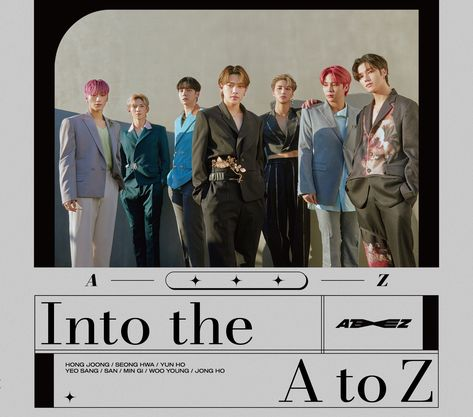

Home
Ateez is een kpop groep die hun debuut maakte op 24/10/2018. Daar voor waren ze gekend als KQ fellaz. Ze waren genoemd naar het Entertainment bedijf KQ ent. KQ fellaz was een dans krew. Ateez is gekend voor hun goeie muziek, dansers, zangers en rappers. Ze kwamen van een klein bedrijf dus ze hadden vroeger veel geld problemen. Zij maken Koreaanse en Japanse muziek. Nu zijn ze een globale hit.
Albums
TREASURE EP.1: All to Zero kwam uit op 24 Oktober, 2018
TREASURE EP.2: Zero To One kwam uit op 15 Januari, 2019
TREASURE EP.3: One To All kwam uit 10 Juni, 2019
TREASURE EP.FIN: All To Action kwam uit op 8 Oktober, 2019
TREASURE EP. Extra: Shift The Map kwam uit op 4 December, 2019
TREASURE EPILOGUE : Action To Answer kwam uit op 6 Januari, 2020
TREASURE EP. Map To Answer kwam uit op 12 Februari, 2020 (japans)
ZERO : FEVER Part.1 kwam uit op 29 Juli, 2020
Call Me Anytime kwam uit op 30 December, 2020
ZERO : FEVER Part.2 kwam uit op 1 Maart, 2021
Into the A to Z kwam uit op 25 Maart, 2021 (Japans)
ZERO : FEVER Part.3 kwam uit op 13 September, 2021
ZERO : FEVER EPILOGUE kwam uit op 10 December, 2021
BEYOND : ZERO kwam uit op 25 Mei, 2022 (Japans)
THE WORLD EP.1 : MOVEMENT 29 Juli, 2022
Groep
.jpg)
Kim Hongjoong
Park Seonghwa
Jeong YunHo
Kang Yeosang
Choi San
Song MinGi
Jung WooYoung
Choi Jongho